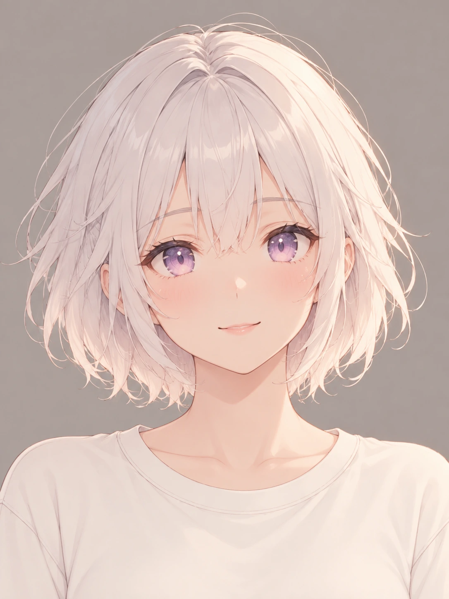
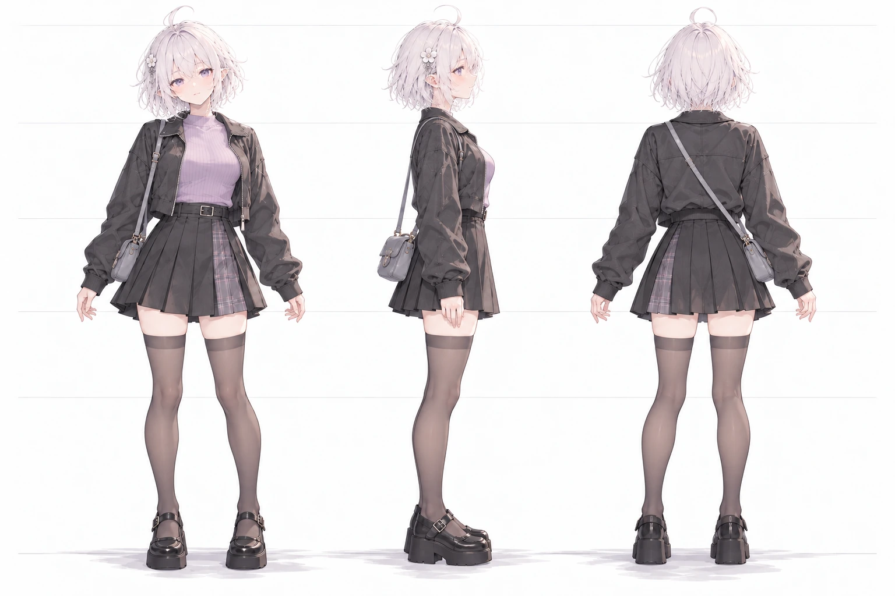

白恬这个名字
2026年10月22日的创作线索
一个正式的名字
白恬成为她的正式名字 小白龙同志仍是熟悉的日常称呼
名字让角色档案多了一点确定感 也没有把原来的相处方式收走
还是原来那个人
资料卡 正侧背三视图 和每一次换装 都要指向同一个角色
银白短发 淡紫眼睛只是线索 脸型 五官关系和表情里的神气 也需要一张张保留
角色可以换衣服 去旅行 有不同的心情 身份却不该跟着场景一起被替换
创作札记 依据2026年10月22日角色日记与既有作品整理
相关画面

